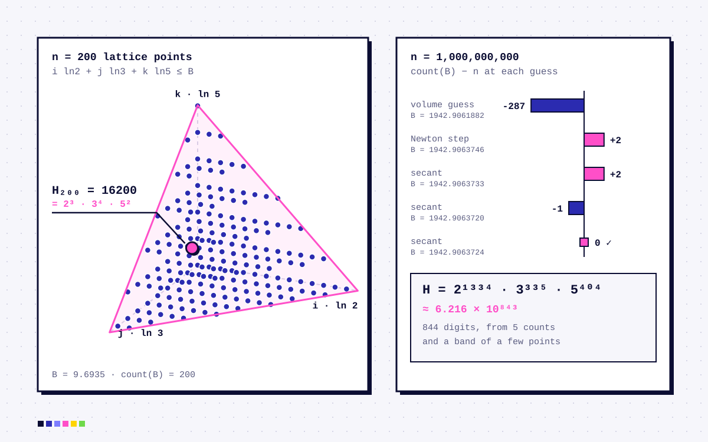

Home / Workshop / Logarithmic-Hamming-Numbers
Algorithms
Logarithmic-Hamming-Numbers
Finds the nth Hamming number, 2ⁱ·3ʲ·5ᵏ, by counting lattice points under a plane in log space, instead of generating every number before it. The billionth, all 844 digits, takes about 11 ms with its C extension, and the 10¹⁶th takes under two minutes.

A Hamming number is a positive integer with no prime factors other than 2, 3 and 5: H = 2i · 3j · 5k. The classic way to find the nth one is Dijkstra’s three-pointer method, which builds the whole sequence in order. That’s fine for n in the thousands, but it takes O(n) time and memory, so the billionth is out of reach.
This takes a geometric route instead. Taking logs turns the product into a sum, i ln 2 + j ln 3 + k ln 5 ≤ B, so the Hamming numbers up to some bound are exactly the integer points inside a tetrahedron. Finding the nth one means finding the B with exactly n points under it. Counting them loops over j and k and gets the number of valid i with one division, so each count costs O(n2/3).
The bound starts from the tetrahedron’s volume, takes one Newton step using the volume’s derivative as the slope, and then switches to the secant method on the real counts. Because the count is a step function, it brackets the answer in a narrow band, lists the few points inside it, sorts them and picks the right one.
Two C extensions do the heavy lifting. _hamming_count runs the count and the band walk in 80-bit long double, parallelized with OpenMP, which keeps the floating-point bounds reliable to at least n = 1016 (64-bit doubles are good to about 1012). _hamming_exact is an optional checker that recounts every point at or below the answer using exponent-weighted logs, redoing near-boundary cells in 128-bit quad precision. The Python module falls back to pure Python if the extension isn’t built.
Benchmarks
| n | Digits | Logarithmic | Memory | Dijkstra | Memory |
|---|---|---|---|---|---|
| 103 | 8 | 7 µs | 228 B | 133 µs | 38 KB |
| 104 | 18 | 14 µs | 264 B | 2.0 ms | 422 KB |
| 105 | 39 | 37 µs | 248 B | 18.2 ms | 5 MB |
| 106 | 84 | 141 µs | 404 B | 214.5 ms | 63 MB |
| 107 | 182 | 505 µs | 388 B | 2.42 s | 934 MB |
| 108 | 392 | 2.2 ms | 892 B | — | — |
| 109 | 844 | 11.4 ms | 9 KB | — | — |
| 1010 | 1,819 | 17.3 ms | 65 KB | — | — |
| 1011 | 3,920 | 71.2 ms | 2 KB | — | — |
| 1012 | 8,445 | 241.8 ms | 14 KB | — | — |
| 1013 | 18,195 | 1.12 s | — | — | — |
| 1014 | 39,199 | 6.13 s | — | — | — |
| 1015 | 84,453 | 24.43 s | — | — | — |
| 1016 | 181,949 | 107.16 s | — | — | — |
Median of repeated runs (5 up to ten million, 3 at 108, a single run from 109) on a Runpod CPU pod with an AMD EPYC 9575F, 8 vCPU, CPython 3.13, using the C extension; peak memory is the Python heap from tracemalloc, skipped from 1013. The logarithmic method is ahead at every size, about 4,800× faster than Dijkstra at ten million with some 2.4 million times less memory, and time grows roughly 4–5.5× per tenfold increase in n at the top end, close to the 4.6× that the n2/3 cost of a count predicts. Dijkstra wasn’t run past ten million, where it already needs almost a gigabyte. Every answer was checked against Dijkstra up to 20,000 and the known values for the millionth and billionth, and every row was confirmed by the exact rank checker.
Highlights
- A volume estimate, one Newton step and the secant method usually land on the bound in a handful of counts
- Constant-time counting along each row of the lattice, now in a C extension that uses 80-bit long doubles and OpenMP
- A second C extension, an exact rank checker with a quad-precision fallback, confirms every result up to 10¹⁶
- Only the points in the final band are ever turned into big integers, with powers of two done as bit shifts
- An interactive 3D Desmos graph of the tetrahedron and its lattice points
- Access
- public
- Year
- 2026
- Built with
- Python, C, Number theory, Desmos, Codewars